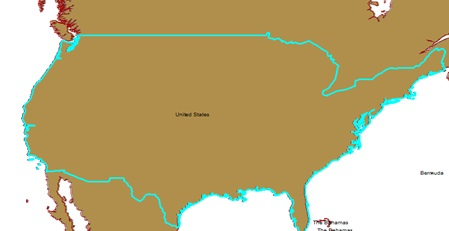

The OperatorCut performs the cut operation on a given geometry.
It splits the target polyline or polygon where
the polygon/polyline is crossed by the cutter polyline.
Using the cut operator (also known as Cut Tool in ArcMap), we can cut a polygon/polyline using a cutter polyline.
Here is an example where we were able to divide the map of United States into three broad categories - West, Central and East for further analysis of population change:
|  |  |
Here is how we use OperatorCut in a simple Java Program:
//This creates an instance of the cut operator. OperatorCut opCut = OperatorCut.local(); /* * considerTouch: True/False indicates whether we consider a touch event a cut * cuttee: Input Geometry to be cut * cutter: Polyline which will divide the cuttee into pieces where it crosses the cutter. * Returns a Geometry cursor of the cut geometries. */ GeometryCursor cursor = opCut.execute(considerTouch, cuttee, cutter, spatialReference, null);
The cut operation returns a Geometry Cursor of cut geometries.
All left cuts will be grouped together in the first geometry. Right cuts and coincident cuts are grouped in the second geometry. Each undefined cut along with any uncut parts are output as separate geometries. If there were no cuts, the cursor will return no geometry. If the left or right cut does not exist, the returned geometry will be empty for this type of cut.
An undefined cut will only be produced if a left or right cut was produced and there was a part left over after cutting or a cut is bounded to the left and right of the cutter.